Unit 6 · Session 2 · Tue, Dec 1, 2026
4 parts · every fact cited to its slide or textbook page. About 120 minutes of focused study.
IO = syllabus unit objective · SO = this session's objectives slide.
| ID | Objective | Covered in |
|---|---|---|
| IO6.1 | Identify major pharmacologic classes used in the management of genitourinary and reproductive conditions and describe their mechanisms of action. | Part 1 · Autonomic Control of the Lower Urinary Tract Part 2 · Overactive Bladder Drugs Part 3 · BPH, Erectile Dysfunction & PDE5 Inhibitors |
| IO6.2 | Describe the indications, contraindications, adverse effects, and clinically significant interactions associated with medications used to treat genitourinary and reproductive conditions. | Part 2 · Overactive Bladder Drugs Part 3 · BPH, Erectile Dysfunction & PDE5 Inhibitors |
| IO6.3 | Compare pharmacologic agents within and across therapeutic classes to distinguish clinically relevant differences in efficacy, safety, and use. | Part 2 · Overactive Bladder Drugs Part 3 · BPH, Erectile Dysfunction & PDE5 Inhibitors Part 4 · Putting It All Together: GU Toolkit |
| IO6.4 | Select appropriate pharmacologic therapy for common genitourinary and reproductive conditions based on clinical presentation and patient-specific factors. | Part 2 · Overactive Bladder Drugs Part 3 · BPH, Erectile Dysfunction & PDE5 Inhibitors Part 4 · Putting It All Together: GU Toolkit |
| IO6.5 | Identify appropriate dosing, administration, and monitoring considerations for medications used in genitourinary and reproductive conditions. | Part 3 · BPH, Erectile Dysfunction & PDE5 Inhibitors |
| IO6.6 | Explain important medication-use and safety information to patients receiving genitourinary and reproductive pharmacotherapy. | Part 2 · Overactive Bladder Drugs Part 3 · BPH, Erectile Dysfunction & PDE5 Inhibitors Part 4 · Putting It All Together: GU Toolkit |
| SO1 | Describe the autonomic and somatic innervation of the bladder and lower urinary tract, and the receptor subtypes governing storage versus voiding. | Part 1 · Autonomic Control of the Lower Urinary Tract |
| SO2 | Describe the mechanism, indications, and adverse effects of antimuscarinic agents and beta-3 agonists in overactive bladder and urinary incontinence. | Part 2 · Overactive Bladder Drugs |
| SO3 | Describe the mechanism and adverse effects of alpha1 blockers and 5-alpha-reductase inhibitors in benign prostatic hyperplasia (BPH). | Part 3 · BPH, Erectile Dysfunction & PDE5 Inhibitors |
| SO4 | Describe non-adrenergic, noncholinergic (NANC) neurotransmission and the NO-cGMP pathway underlying erectile function and PDE5 inhibitor pharmacology, including the absolute nitrate contraindication. | Part 3 · BPH, Erectile Dysfunction & PDE5 Inhibitors |
| SO5 | Integrate autonomic receptor pharmacology across the genitourinary and cardiovascular systems, and apply the full Unit 6 toolkit to integrated clinical scenarios with a cumulative recall quiz. | Part 4 · Putting It All Together: GU Toolkit |
Slide discrepancies: none found (slides, speaker notes, and study guide agree).
Not covered in materials
Not covered in materials
Not covered in materials
Not covered in materials
Not covered in materials
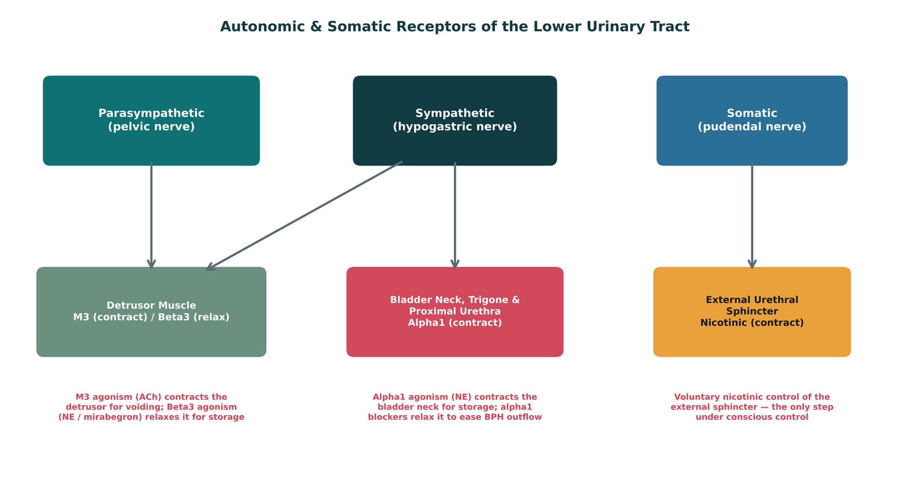
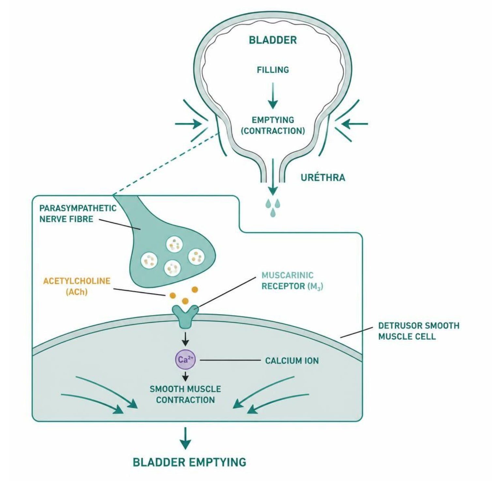
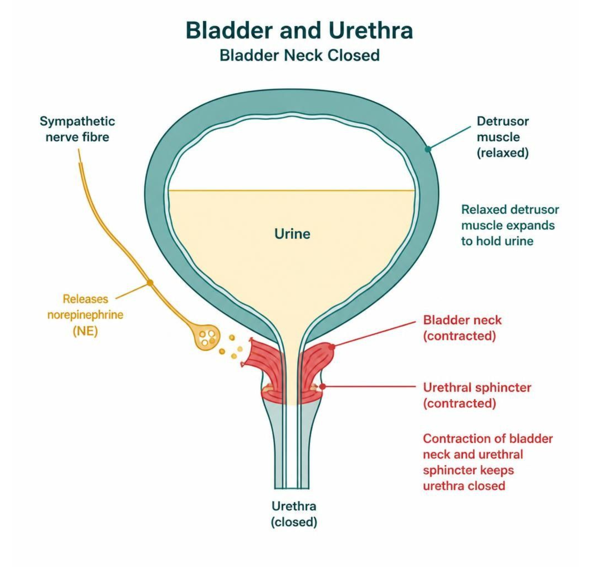
| Storage phase | Voiding phase | |
|---|---|---|
| Dominant tone | Sympathetic | Parasympathetic |
| Detrusor | Beta3 agonism relaxes the detrusor body | M3 agonism contracts the detrusor body |
| Bladder neck | Alpha1 agonism contracts the bladder neck/urethra | Sympathetic tone withdraws, bladder neck relaxes |
| External sphincter | Somatic (pudendal) tone keeps it closed | Voluntary relaxation (somatic) |
How to tell them apart. Sources: S9; S9 (notes)
Not covered in materials
Not covered in materials
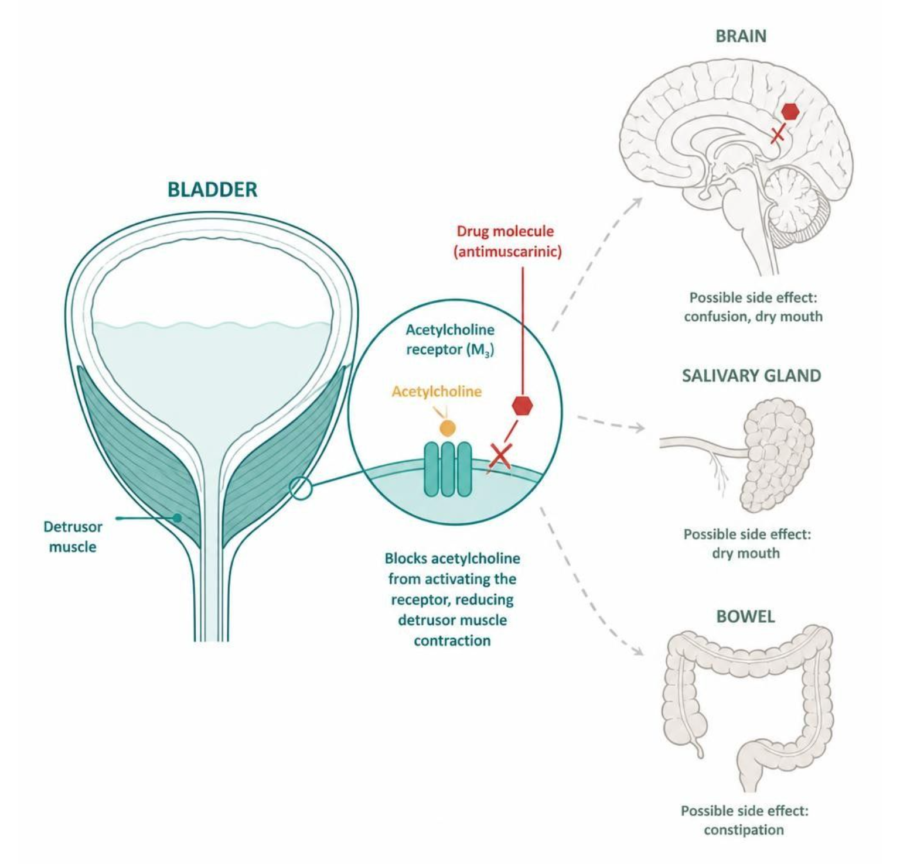
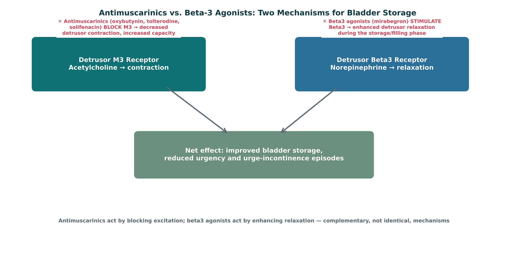
| Antimuscarinics | Mirabegron (beta3 agonist) | |
|---|---|---|
| Mechanism | Block M3 (and M2) on the detrusor | Stimulate beta3 on the detrusor |
| Adverse effects | Dry mouth, constipation, blurred vision, confusion | Raises BP; headache, nasopharyngitis |
| Older adults | Avoid oxybutynin (highest CNS burden) | Preferred — no anticholinergic burden |
| Cautions | Narrow-angle glaucoma, urinary retention | Uncontrolled hypertension; CYP2D6 inhibitor |
How to tell them apart. Sources: S13; S15
| Drug | Class | Formulation | Adult dose | Indications |
|---|---|---|---|---|
| Oxybutynin (Ditropan, Oxytrol) | Antimuscarinic (overactive bladder) | IR tablets 5 mg; ER tablets 5/10/15 mg; transdermal patch 3.9 mg/day; gel | IR: 5 mg PO two to three times daily (maximum 20 mg/day); ER: 5-10 mg daily (maximum 30 mg) | Overactive bladder, urge incontinence, neurogenic bladder |
| Tolterodine (Detrol) | Antimuscarinic | Tablets 1/2 mg; ER capsules 2/4 mg | IR: 2 mg PO twice daily (1 mg if hepatic impairment or strong CYP3A4 inhibitors); ER: 4 mg daily | Overactive bladder with urgency, frequency, and urge incontinence |
| Solifenacin (Vesicare) | Antimuscarinic (M3-selective) | Tablets 5/10 mg | 5 mg PO once daily, may increase to 10 mg (maximum 5 mg with severe renal impairment or strong CYP3A4 inhibitors) | Overactive bladder |
| Darifenacin (Enablex) | Antimuscarinic (M3-selective) | ER tablets 7.5/15 mg | 7.5 mg PO once daily, may increase to 15 mg after 2 weeks | Overactive bladder |
| Mirabegron (Myrbetriq) | Beta-3 adrenergic agonist | ER tablets 25/50 mg; granules for suspension | 25 mg PO once daily, may increase to 50 mg after 4-8 weeks (maximum 25 mg with eGFR 15-29) | Overactive bladder (alone or with an antimuscarinic) |
How to tell them apart. Sources: S44; S45; S46; S47; S48
| Drug | Adverse effects | Contraindications | Toxicity / overdose |
|---|---|---|---|
| Oxybutynin (Ditropan, Oxytrol) | Dry mouth, constipation, blurred vision, drowsiness, confusion, urinary retention | Narrow-angle glaucoma, urinary retention, gastric retention, severe ulcerative colitis; avoid in older adults with dementia | Anticholinergic toxicity: confusion, hallucinations, tachycardia, hyperthermia, urinary retention; highest CNS burden in the class |
| Tolterodine (Detrol) | Dry mouth, constipation, headache, dizziness, dry eyes, QT prolongation (rare) | Urinary retention, gastric retention, uncontrolled narrow-angle glaucoma | Anticholinergic toxicity; reduce dose with CYP3A4 inhibitors or hepatic impairment |
| Solifenacin (Vesicare) | Dry mouth, constipation, blurred vision, QT prolongation, urinary retention | Urinary retention, gastric retention, uncontrolled narrow-angle glaucoma | Anticholinergic toxicity and QT prolongation in overdose; adjust dose with kidney, liver, and CYP3A4 interactions |
| Darifenacin (Enablex) | Constipation (prominent), dry mouth, dyspepsia, headache | Urinary or gastric retention, uncontrolled narrow-angle glaucoma | Anticholinergic toxicity; CYP2D6 and CYP3A4 interactions; limit dose with moderate CYP3A4 inhibitors |
| Mirabegron (Myrbetriq) | Hypertension, nasopharyngitis, urinary tract infection, headache, urinary retention | Severe uncontrolled hypertension, end-stage renal disease; caution with CYP2D6 substrates | Raises blood pressure; inhibits CYP2D6, increasing metoprolol and desipramine levels; no anticholinergic burden |
How to tell them apart. Sources: S44; S45; S46; S47; S48
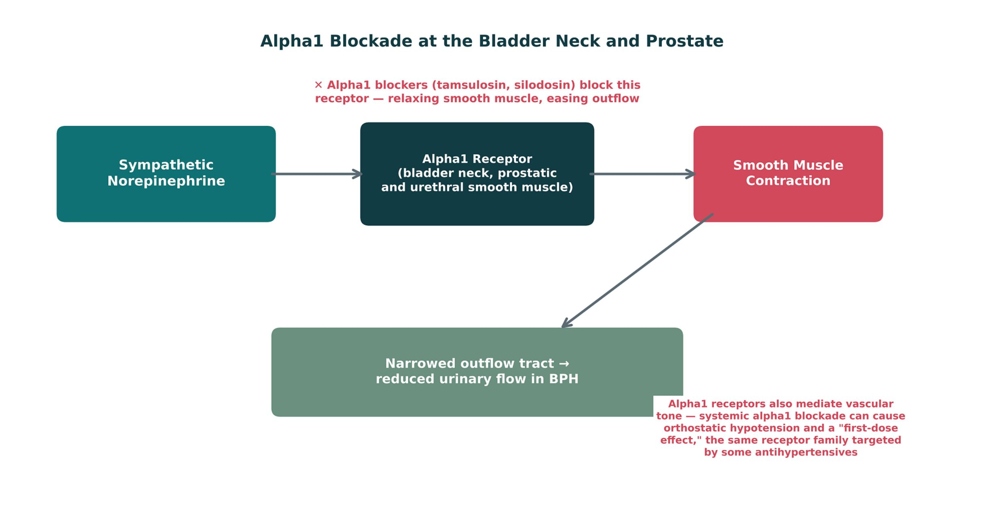
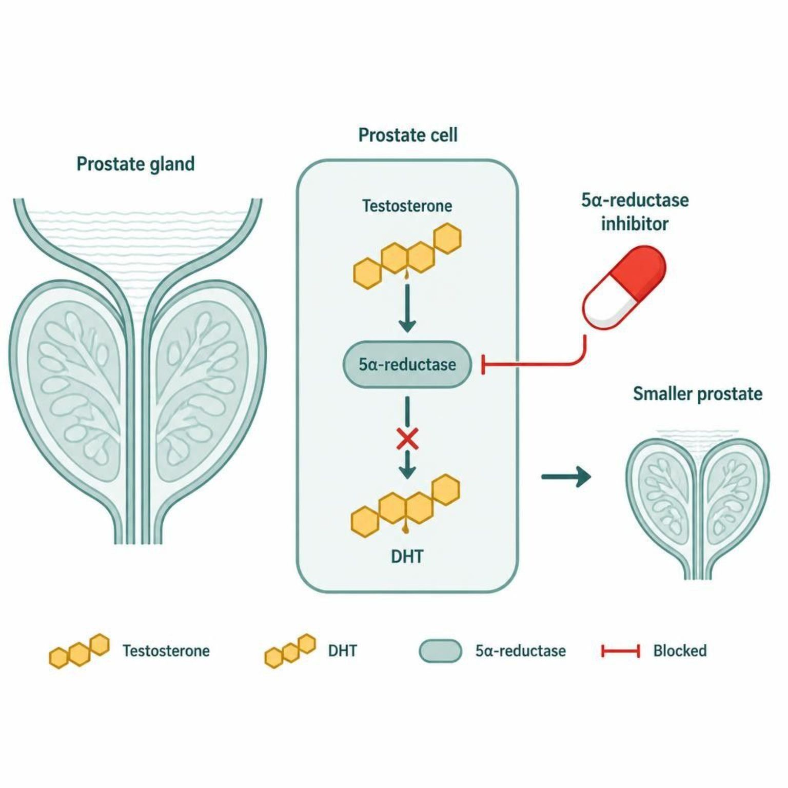
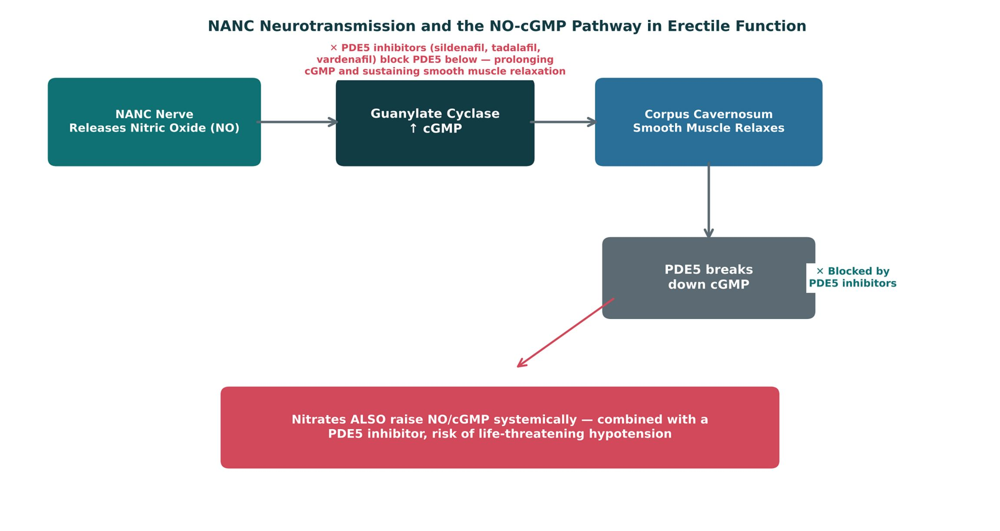
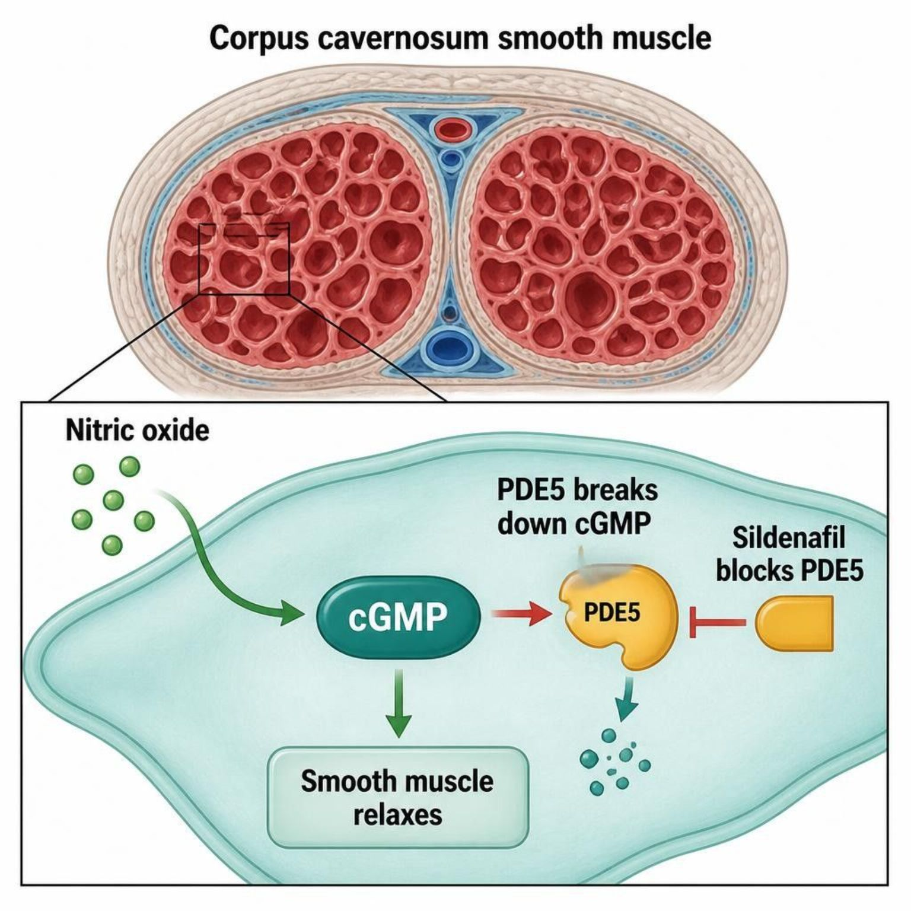
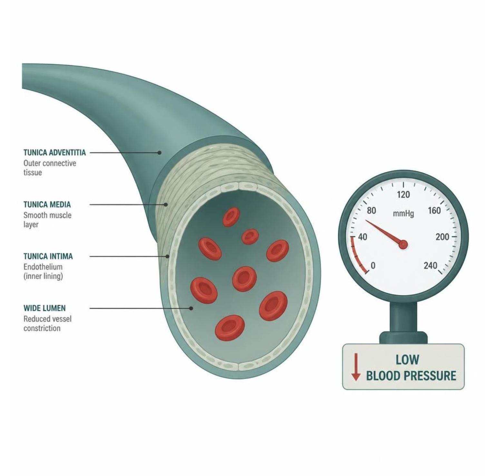
| Alpha1 blockers | 5-alpha-reductase inhibitors | |
|---|---|---|
| Mechanism | Relax prostate/bladder-neck smooth muscle | Block testosterone → DHT; shrink the gland |
| Onset | Days | 3–6 months |
| Adverse effects | Orthostatic hypotension, first-dose effect, floppy iris | Decreased libido, ED; PSA halved |
| Use | Rapid symptom relief | Long-term disease modification — often combined |
How to tell them apart. Sources: S21; S23; S24
| Drug | Class | Formulation | Adult dose | Indications |
|---|---|---|---|---|
| Tamsulosin (Flomax) | Alpha-1A selective blocker | Capsules 0.4 mg | 0.4 mg PO once daily 30 minutes after the same meal, may increase to 0.8 mg | Benign prostatic hyperplasia symptoms, ureteral stone passage (off-label) |
| Silodosin (Rapaflo) | Highly uroselective alpha-1A blocker | Capsules 4/8 mg | 8 mg PO once daily with a meal (4 mg with moderate renal impairment) | Benign prostatic hyperplasia symptoms |
| Doxazosin (Cardura) | Alpha-1 blocker (nonselective among alpha-1 subtypes) | Tablets 1/2/4/8 mg; ER tablets 4/8 mg | BPH: 1 mg PO daily at bedtime, titrate to 4-8 mg daily; hypertension: 1-16 mg daily | Benign prostatic hyperplasia, hypertension |
| Terazosin (Hytrin) | Alpha-1 blocker | Tablets 1/2/5/10 mg; capsules | BPH: 1 mg PO at bedtime, titrate to 5-10 mg daily; hypertension: 1-5 mg daily (maximum 20 mg) | Benign prostatic hyperplasia, hypertension |
How to tell them apart. Sources: S49; S50; S51; S52
| Drug | Adverse effects | Contraindications | Toxicity / overdose |
|---|---|---|---|
| Tamsulosin (Flomax) | Dizziness, orthostatic hypotension, retrograde ejaculation, rhinitis, intraoperative floppy iris syndrome | Hypersensitivity (sulfonamide allergy caution); strong CYP3A4 inhibitors | Orthostatic hypotension and syncope with first dose; floppy iris syndrome in cataract surgery |
| Silodosin (Rapaflo) | Retrograde ejaculation (common), dizziness, orthostatic hypotension, diarrhea | Severe renal impairment (CrCl below 30 mL/min), severe hepatic impairment, strong CYP3A4 inhibitors | Orthostatic hypotension; floppy iris syndrome; contraindicated with strong CYP3A4 inhibitors |
| Doxazosin (Cardura) | Dizziness, orthostatic hypotension, first-dose syncope, fatigue, edema, floppy iris syndrome | Hypersensitivity to quinazolines; caution with PDE5 inhibitors | First-dose syncope and profound hypotension; restart at 1 mg after interruption of several days |
| Terazosin (Hytrin) | Dizziness, orthostatic hypotension, first-dose syncope, fatigue, peripheral edema, floppy iris syndrome | Hypersensitivity to quinazolines; caution with PDE5 inhibitors | First-dose hypotension and syncope; repeat titration after missed doses |
How to tell them apart. Sources: S49; S50; S51; S52
| Drug | Class | Formulation | Adult dose | Indications |
|---|---|---|---|---|
| Finasteride (Proscar, Propecia) | 5-alpha-reductase inhibitor | Tablet 5 mg (BPH); 1 mg (hair loss) | 5 mg PO daily for BPH; 1 mg PO daily for male-pattern hair loss | BPH, androgenetic alopecia |
| Dutasteride (Avodart) | 5-alpha-reductase inhibitor (types 1 and 2) | Capsules 0.5 mg; combination with tamsulosin (Jalyn) | 0.5 mg PO once daily for BPH; effects take 3-6 months | Benign prostatic hyperplasia, combination therapy with an alpha-1 blocker |
How to tell them apart. Sources: S53; S54
| Drug | Adverse effects | Contraindications | Toxicity / overdose |
|---|---|---|---|
| Finasteride (Proscar, Propecia) | Decreased libido, erectile dysfunction, reduced ejaculate, gynecomastia | Pregnancy and women who may be pregnant (do not handle crushed tablets), hypersensitivity | Lowers PSA by about half; reports of depression; teratogenic to a male fetus |
| Dutasteride (Avodart) | Decreased libido, erectile dysfunction, ejaculation disorders, breast tenderness, depression | Pregnancy and women of childbearing potential handling capsules, severe hepatic impairment | Lowers PSA by about half; pregnant partners must avoid handling capsules; monitor PSA |
How to tell them apart. Sources: S53; S54
| Drug | Class | Formulation | Adult dose | Indications |
|---|---|---|---|---|
| Sildenafil (Viagra, Revatio) | PDE5 inhibitor | Tablets 25/50/100 mg (Viagra); 20 mg (Revatio) | ED: 50 mg PO about 1 hour before activity (range 25-100 mg), no more than once daily; PAH: 20 mg TID | Erectile dysfunction, pulmonary arterial hypertension (Revatio) |
| Tadalafil (Cialis, Adcirca) | PDE5 inhibitor (long-acting) | Tablets 2.5/5/10/20 mg | ED: 10 mg PO before activity (5-20 mg), or 2.5-5 mg daily; BPH: 5 mg daily | Erectile dysfunction, BPH symptoms, pulmonary arterial hypertension (Adcirca) |
| Vardenafil (Levitra, Staxyn) | PDE5 inhibitor | Tablets 2.5/5/10/20 mg; orally disintegrating tablet 10 mg | 10 mg PO about 60 minutes before activity (5-20 mg), no more than once daily | Erectile dysfunction |
How to tell them apart. Sources: S55; S56; S57
| Drug | Adverse effects | Contraindications | Toxicity / overdose |
|---|---|---|---|
| Sildenafil (Viagra, Revatio) | Headache, flushing, dyspepsia, nasal congestion, visual changes (blue tint), hypotension | Concurrent nitrates or riociguat, hypersensitivity; caution with alpha-1 blockers and severe cardiovascular disease | Profound hypotension with nitrates; priapism over 4 hours is an emergency; sudden vision or hearing loss |
| Tadalafil (Cialis, Adcirca) | Headache, dyspepsia, back pain, myalgia, flushing, nasal congestion | Concurrent nitrates or riociguat; caution with alpha-1 blockers (except tamsulosin 0.4 mg) and strong CYP3A4 inhibitors | Profound hypotension with nitrates for at least 48 hours after the last dose; priapism |
| Vardenafil (Levitra, Staxyn) | Headache, flushing, rhinitis, dyspepsia, QT prolongation, visual changes | Concurrent nitrates or riociguat, congenital long QT, class IA or III antiarrhythmics | Profound hypotension with nitrates; QT prolongation; priapism |
How to tell them apart. Sources: S55; S56; S57
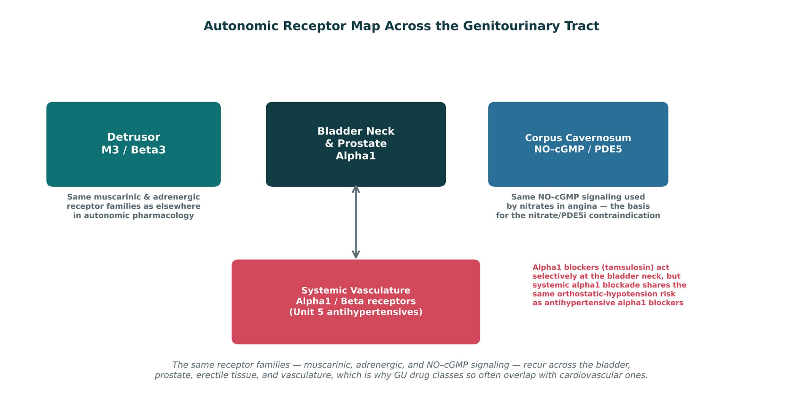
| Patient | Approach | Biggest safety check |
|---|---|---|
| A · Older adult, urge incontinence, mild cognitive impairment | Mirabegron | Blood pressure; avoid anticholinergics |
| B · BPH, wants fast relief and disease modification | Alpha1 blocker + 5-ARI | Orthostasis, first dose; PSA halved |
| C · PCOS, irregular cycles, hirsutism, no pregnancy plans | Combined contraception ± metformin | Estrogen contraindications |
| D · Angina on a long-acting nitrate, wants ED treatment | No PDE5 inhibitor; involve cardiology | Life-threatening hypotension |
How to tell them apart. Sources: S35; S35 (notes)
| Drug(s) | Why it matters here |
|---|---|
| Nitrates | Isosorbide, nitroglycerin: never combine with PDE5 inhibitors |
| Riociguat | Contraindicated with PDE5 inhibitors |
| Other anticholinergics | Diphenhydramine, tricyclic antidepressants: add to anticholinergic burden |
| Cholinesterase inhibitors | Donepezil: oppose antimuscarinics |
| Antihypertensives | Additive hypotension with alpha-1 blockers |
| Strong CYP3A4 inhibitors | Ketoconazole, clarithromycin: raise PDE5 inhibitor and solifenacin levels |
| Desmopressin | Nocturia, beyond this lecture |
| OnabotulinumtoxinA | Refractory overactive bladder, beyond this lecture |
| Duloxetine | Stress incontinence, beyond this lecture |
How to tell them apart. Sources: S58; S58 (notes)
Every term, mechanism, drug, and number. Hide the answers and quiz yourself; tap a blurred answer to peek.
| Prompt | Answer |
|---|---|
| Detrusor contraction | M3 (Gq → PLC → Ca²⁺)S5; S6 |
| Storage receptors | Alpha1 (neck closed) + beta3 (detrusor relaxed)S7; S8 |
| Antimuscarinic AEs | Dry mouth, constipation, blurred vision, confusionS13 |
| Highest CNS burden | OxybutyninS13; SG U6-R12 |
| Mirabegron | Beta3 agonist; no anticholinergic burden; ↑ BP; CYP2D6 inhibitorS15 |
| Uroselective alpha1 | Tamsulosin, silodosinS21; SG U6-R14 |
| Alpha1 blocker AEs | Orthostatic hypotension, first-dose effect, floppy irisS21 |
| 5-ARI | 3–6 months; PSA halved; pregnant partners avoid crushed tabletsS23; SG U6-R15 |
| PDE5 + nitrate | Absolute contraindication — profound hypotensionS26; SG U6-R16 |
| Tadalafil | Longer half-lifeS26 |
| Sildenafil | Blue-tinged visionS26 |
| Finasteride onset | DHT falls within 8 h; prostate shrinks over monthsp. 781; S23 |
First, the lecture's own 10 knowledge checks — exactly as written. Then original PANCE-style questions. Tap an answer to reveal the explanation.
Tick only what you could teach out loud. Saved on this device.